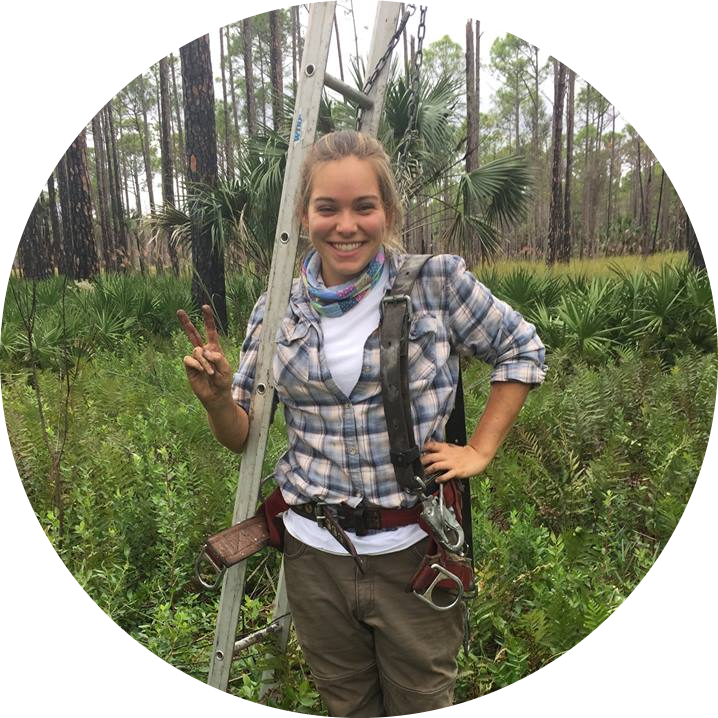

|  | Abby Walter |
|---|---|
| about / publications / data projects | |
|
About
Howdy, my name is Abby! I'm a Wildlife Biologist in Maryland currently pursuing my dream job of processing and managing migratory bird data. My background is in ornithology and I am a birder at heart. Before starting my current position, I did backyard bird banding for Neighborhood Nestwatch at the Smithsonian Migratory Bird Center and migratory bird mist netting for the National Zoo. I studied Red-headed Woodpecker parental care behavior and home range size for my Master's degree with the Bulluck Avian Ecology lab at Virginia Commonwealth University. Other study species I have had the joy of working with include Piping Plovers, Red-cockaded Woodpeckers, Gray Catbirds, Wood Thrush, and even frosted flatwoods salamanders. I am originally from Delaware and attended University of Delaware for undergrad. |
|